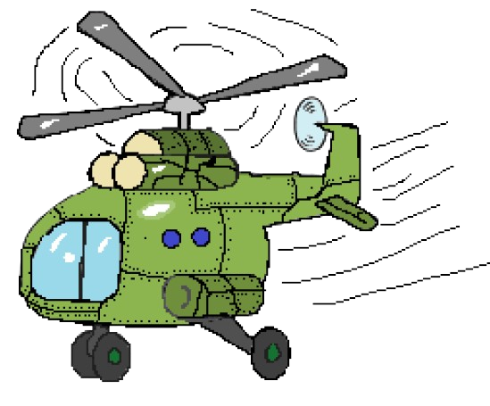
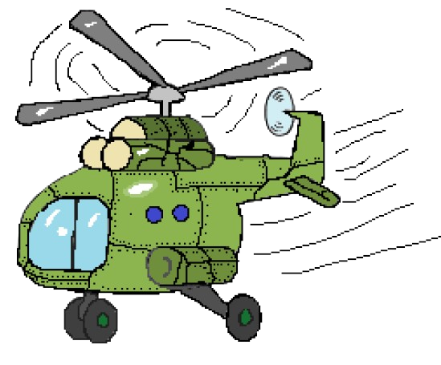

Гелікоптери Сікорського
Після еміграції до США Ігор Сікорський почав активно працювати над ідеєю створення гелікоптера. Його метою було зробити літальний апарат, який міг би вертикально злітати й сідати, зависати у повітрі та маневрувати там, де літаки безсилі.
У 1939 році Сікорський створив VS-300 — перший успішний одногвинтовий вертоліт. Ця машина стала основою для подальших розробок і заклала фундамент сучасної вертолітної авіації.
Пізніше його компанія випустила моделі R-4, H-19 та інші, які використовувалися у військовій та цивільній сферах по всьому світу.
Ілюстрації гелікоптерів
 
